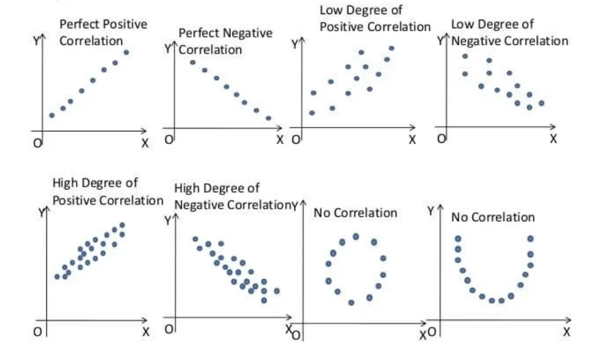
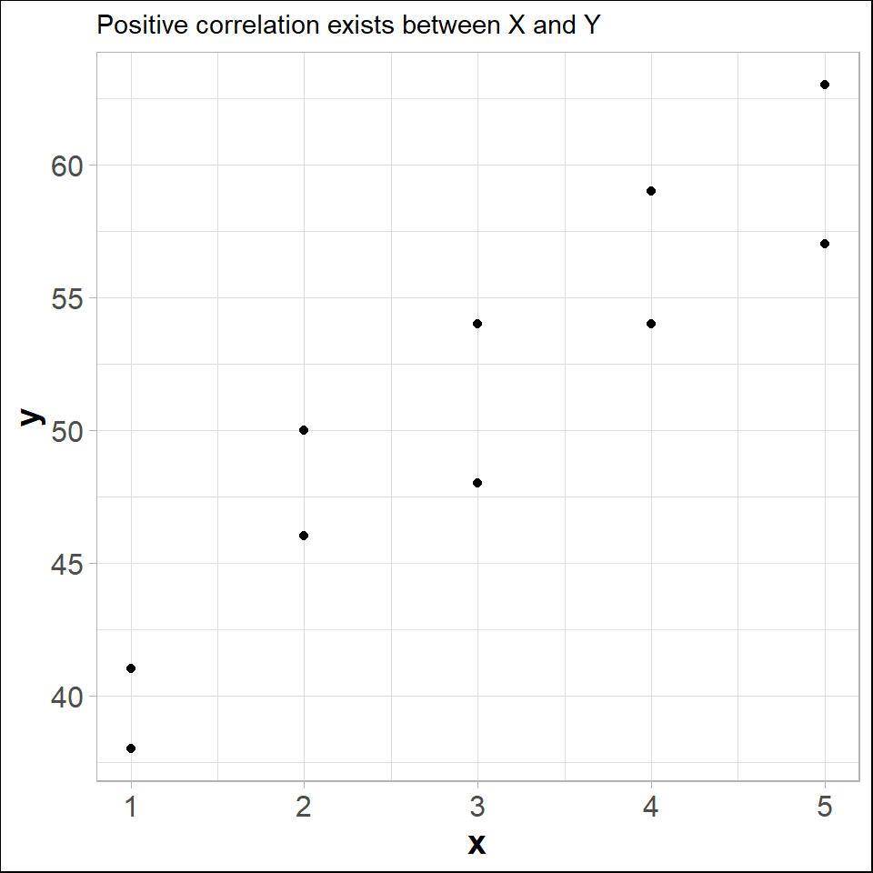
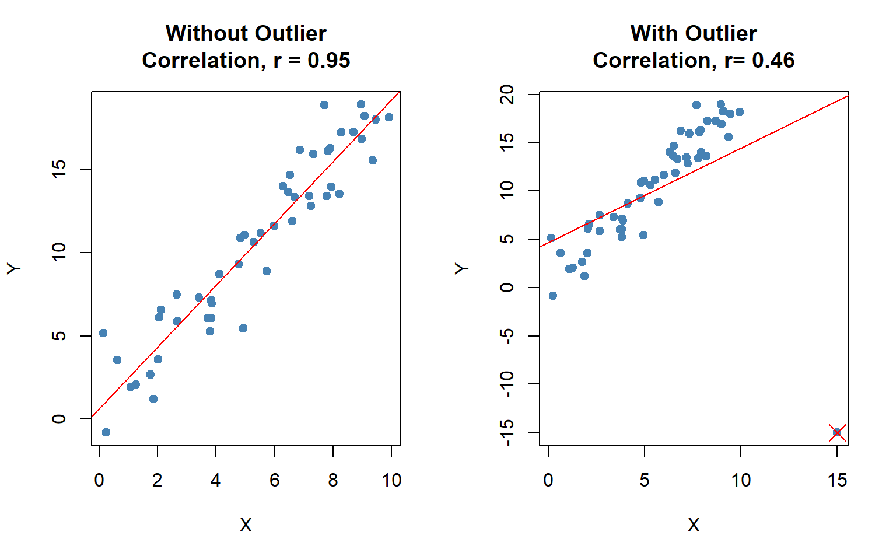
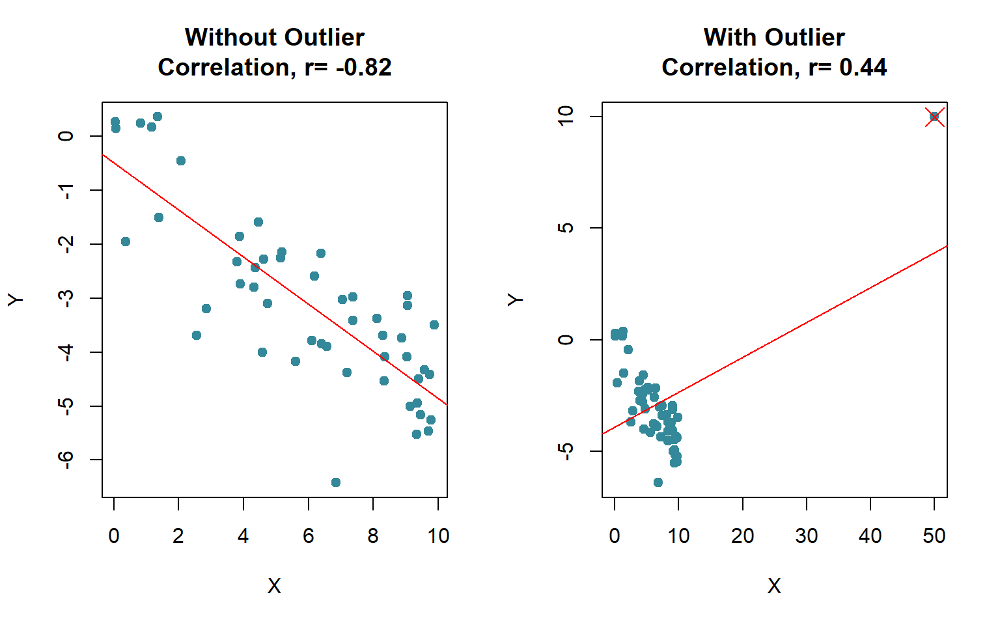

In regression analysis we try to estimate or predict the outcome/ response of one variable (dependent variable) on the basis of other variables (independent variable). For example, sales of certain product depends of price, advertising cost, quality of the product, brand etc.
It involves developing a mathematical model or equation that describes the relationship between the dependent variable and the independent variables.
In the following section we will discuss about the Simple linear regression (SLR) where a independent variable and a dependent variable are involved.
7.1.1Population regression function (PRF)
\[y_i=\beta_0+\beta_1 x_i+\epsilon_i \hspace{10pt} ; i=1,2,3,..., N \tag{7.1}\]
Where,
\(y\)= dependent variable
\(x\)= independent variable
\(\beta_0\) =y-intercept
\(\beta_1\)= slope of the line/ regression coefficient
\(\varepsilon\) = error variable
Assumptions
The errors are independently, identically normally distributed with constant variance\(\sigma_\varepsilon ^2\) that is \(\varepsilon_i \overset{\text{i.i.d.}}{\sim} \mathcal{N}(0, \sigma_\epsilon^2)\) .
The independent variable should not be correlated with the error term (no endogeneity)
Taking conditional expectation of of PRF for a given \(x_i\) we have
\[E(y_i/x_i)=\beta_0+\beta_1 x_i \tag{7.2}\]
From sample data we have to estimate \(E(y_i/x_i)\) which is equivalent to estimate \(\beta_0\) and \(\beta_1\).
7.1.2 Ordinary least square (OLS) estimate of \(E(y_i/x_i)\)
Let we have \(n\) pairs of sample data: \(\{X,Y\}=\{ (x_1,y_1), (x_2,y_2),..., (x_n, y_n) \}\). From the sample data suppose the estimated regression line of\(E(y_i/x_i)\)is
In OLS method we minimize the RSSwith respect to \(\hat \beta_0\) and \(\hat \beta_1\). To minimize RSSwe have to set two equations using partial derivative:
Problem 15.3 : The owner of a paint store was attempting to analyse the relationship between advertising and sales, and recorded the monthly advertising budget ($’000) and the sales ($m) for a sample of 12 months. The data are listed here:
Advertising
23
46
60
54
28
33
25
31
36
88
95
99
Sales
8
11
13
13
8.9
10.7
9
10.4
11
14
14.4
15.9
i) Identify the dependent and independent variable.
ii) Plot the data. Is it appear to be linear?
iii) Now, fit/ estimate a linear regression line.
iv) Interpret the regression/slope coefficient.
v) Predict the sales for the advertising cost $70, 000.
vi) Comment about goodness of fit of the estimated model.
Problem 15.4Age and Blood Pressure.The ages (in years) of 10 men and their systolic blood pressures (in millimeters of mercury).
Age
16
25
39
45
49
64
70
29
57
22
Systolic blood pressure (SBP)
109
128
143
145
180
185
185
199
175
118
Identify the dependent and independent variable.
Plot the data. Is it appear to be linear?
Now, fit/ estimate a linear regression line.
Interpret the regression/slope coefficient.
Predict the SBP for the age of a person is 40 years .
Comment about goodness of fit of the estimated model.
Solution:
Let, \(Y\)=Systolic blood pressure, SBP and \(X\) = age (in years)
i) Here SBP is dependent variable and age is independent variable
ii) Scatter plot of Age versus SBP
library(tidyverse)
── Attaching core tidyverse packages ──────────────────────── tidyverse 2.0.0 ──
✔ dplyr 1.2.1 ✔ readr 2.2.0
✔ forcats 1.0.1 ✔ stringr 1.6.0
✔ ggplot2 4.0.3 ✔ tibble 3.3.1
✔ lubridate 1.9.5 ✔ tidyr 1.3.2
✔ purrr 1.2.2
── Conflicts ────────────────────────────────────────── tidyverse_conflicts() ──
✖ dplyr::filter() masks stats::filter()
✖ dplyr::lag() masks stats::lag()
ℹ Use the conflicted package (<http://conflicted.r-lib.org/>) to force all conflicts to become errors
age<-c(16,25,39,45,49,64,70,29,57,22)sbp<-c(109,128,143,145,180,185,199,130,175,118)#length(sbp)#plot(age,sbp,pch=19)ggplot(data.frame(age,sbp),aes(age,sbp))+geom_point()+geom_smooth(method ="lm",se=FALSE,lwd=0.5)+labs(x="Age (in years)", y="SBP (Hg m)")+theme_bw()
Hence, \(R^2=0.9475\) implies that 94.75% variation in “SBP” can be explained by the estimated model.
7.2 Correlation
In SLR we assume \(Y\) as a random variable but the independent regressor variable \(x\) is a physical or scientific variable but not a random variable. In many situations both \(X\) and \(Y\) are treated as stochastic or random variable with a joint density function \(f(x,y)\) (if both \(X\) and \(Y\) are continuous random variables).
Correlation analysis study the degree and direction of linear relationship between two quantitative random variables.
The numerical value of correlation is called correlation coefficient or Pearson correlation coefficient.
7.2.1 Population correlation coefficient
The population correlation coefficient is denoted by \(\rho\) and defined as:
The \(\rho\) is estimated from sample data by sample correlation coefficient\(r\), where
\[r=\frac{s_{XY}}{s_Y s_Y}\]
To understand the nature and to measure the linear relationship (correlation) between two quantitative variable we use some techniques. In the following section we will discuss about that.
7.2.3 Scatter plot: Graphical method to explore correlation
A scatter plot shows the relationship between two quantitative variables measured for the same individuals. The values of one variable appear on the horizontal axis, and the values of the other variable appear on the vertical axis. Each individual in the data appears as a point on the graph.
A scatterplot displays the strength, direction, and form of the relationship between two quantitative variables (seeFigure 7.2).

Figure 7.2: Types of correlations that can be represented using a scatter plot
library(ggthemes)ggplot(xy,aes(x,y))+geom_point()+labs(subtitle ="Positive correlation exists between X and Y")+theme_light ()+theme(plot.background =element_rect(colour ="black"),axis.title =element_text(size =14, face ="bold"),axis.text =element_text(size =12))

Figure 7.3: Sctter plot between X and Y
In fact, the scatter lot suggests that a straight line could be used as an approximation of the relationship. However coefficient of correlation as descriptive measures which provide direction and strength of the linear relationship between two variables.
7.2.4 Properties of coefficient of correlation
The value of \(\rho\) is always between -1 and 1 inclusive. That is \(-1\le \rho\le+1\).
If all values of either variable are converted to a different scale, the value of \(\rho\) does not change (NOT affected by change of origin and scale).
The value of \(\rho\) is not affected by the choice of X or Y. Interchange all x values and y values, and the value of \(\rho\) will not change (\(\rho\) is a symmetric measure).
\(\rho\) measures the strength of a linear relationship. It is not designed to measure the strength of a relationship that is not linear.
\(\rho\) is very sensitive to outliers in the sense that a single outlier could dramatically affect its value.
NoteProof of \(-1\le\rho\le+1\)
From Cauchy–Schwarz Inequality we know that,
\[(E[XY])^2\le E[X^2] E[Y^2]\]
Now center the variables \(X\) and \(Y\) with respect to their mean we have,
which is close to 1. So the correlation between \(X\) and \(Y\) is strong and positive.
7.2.7 Exercises: Constructing a Scatter Plot and Determining Correlation
In Exercises 1–4, (a) display the data in a scatter plot, (b) calculate the sample correlation coefficient \(r\), and (c) describe the type of correlation and interpret the correlation in the context of the data.
Age and Blood Pressure. The ages (in years) of 10 men and their systolic blood pressures (in millimeters of mercury) (Larson and Farber 2015, 482)
Age, x
16
25
39
45
49
64
70
29
57
22
Systolic blood pressure, y
109
122
143
132
199
185
199
130
175
118
Driving Speed and Fuel Efficiency. A department of transportation’s study on driving speed and miles per gallon for midsize automobiles resulted in the following data (Anderson 2020a, 149):
Speed (Miles per Hour)
30
50
40
55
30
25
60
25
50
55
Miles per Gallon
28
25
25
23
30
32
21
35
26
25
Are the marks one receives in a course related to the amount of time spent studying the subject? To analyze this mysterious possibility, a student took a random sample of 10 students who had enrolled in an accounting class last semester. He asked each to report his or her mark in the course and the total number of hours spent studying accounting. These data are listed here (Keller 2014).
Study time
40
42
37
47
25
44
41
48
35
28
Marks
77
63
79
86
51
78
83
90
65
47
The owner of a paint store was attempting to analyse the relationship between advertising and sales, and recorded the monthly advertising budget ($’000) and the sales ($m) for a sample of 12 months. The data are listed here
Advertising
23
46
60
54
28
33
25
31
36
88
95
99
Sales
8
11
13
13
8.9
10.7
9
10.4
11
14
14.4
15.9
7.2.8 Coefficient of determination
The coefficient of determination measures the amount of variation in the dependent variable that is explained by the variation in the independent variable.
For example, if \(r=0.8764\) between \(X\) and \(Y\) then coefficient of determination\(r^2=(0.8764)^2 \approx 0.7681\).
Interpretation: The \(r^2=0.7681\) tells us that 76.81% variation in \(Y\) (dependent variable) can be explained by \(X\) (independent variable).
7.2.9 Correlation vs. causation
Correlation does not always imply causation. For example,
A study(Messerli 2012) found that there was a significant (\(r=0.791\)) positive correlation between chocolate consumption per capita and number of Nobel laureates per 10 million persons. This does not necessarily implies that more a country consumes chocolate, more the chance of getting a Nobel prize. Rather differences in socioeconomic status from country to country and geographic and climatic factors may play some role to win a Nobel prize.
We might find that there is a positive correlation between the time spent driving on road and the number of accidents but this does not mean that spending more time on road causes accident.Because in that case, in order to avoid accidents one may drive fast so that time spent on road is less (Selvamuthu and Das 2024).
7.2.10 Effect of outlier on correlation coefficient
The correlation coefficient is heavily affected by outlier (see Figure 7.4). It changes the magnitude of the correlation coefficient.
# Set seed for reproducibilityset.seed(0)# Generate data with a positive correlationx <-runif(50, 0, 10)y <-2* x +rnorm(50, 0, 2) # Linear relationship with some noise# Calculate correlation without outliercorrelation_without_outlier <-cor(x, y)# Add an outlierx_outlier <-c(x, 15)y_outlier <-c(y, -15) # Outlier with opposite trend# Calculate correlation with outliercorrelation_with_outlier <-cor(x_outlier, y_outlier)# Plot datapar(mfrow=c(1,2)) # Arrange plots side-by-side# Plot without outlierplot(x, y, main=paste("Without Outlier\nCorrelation, r =", round(correlation_without_outlier, 2)),xlab="X", ylab="Y", col="steelblue", pch=19)abline(lm(y ~ x), col="red") # Add line of best fit# Plot with outlierplot(x_outlier, y_outlier, main=paste("With Outlier\nCorrelation, r=", round(correlation_with_outlier, 2)),xlab="X", ylab="Y", col="steelblue", pch=19)points(15, -15, col="red", pch=4, cex=2) # Mark the outlierabline(lm(y_outlier ~ x_outlier), col="red") # Add line of best fitpar(mfrow=c(1,1)) # Reset plot layout

Figure 7.4: Effect of outlier on the magnitude of correlation coefficient (r)
Even sometime the outlier(s) can change the sign of the correlation coefficient (see Figure 7.5).
# Set seed for reproducibilityset.seed(42)# Generate data with a positive correlationx <-runif(50, 0, 10)y <--0.5* x +rnorm(40, 0, 1) # Negative linear relationship with some noise
Warning in -0.5 * x + rnorm(40, 0, 1): longer object length is not a multiple
of shorter object length
# Calculate correlation without the outliercorrelation_without_outlier <-cor(x, y)# Add an outlier that reverses the correlation directionx_outlier <-c(x, 50)y_outlier <-c(y, 10) # Extreme negative outlier# Calculate correlation with the outliercorrelation_with_outlier <-cor(x_outlier, y_outlier)# Plot datapar(mfrow=c(1,2)) # Arrange plots side-by-side# Plot without outlierplot(x, y, main=paste("Without Outlier\nCorrelation, r=", round(correlation_without_outlier, 2)),xlab="X", ylab="Y", col="#389", pch=19)abline(lm(y ~ x), col="red") # Add line of best fit# Plot with outlierplot(x_outlier, y_outlier, main=paste("With Outlier\nCorrelation, r=", round(correlation_with_outlier, 2)),xlab="X", ylab="Y", col="#389", pch=19)points(50, 10, col="red", pch=4, cex=2) # Mark the outlierabline(lm(y_outlier ~ x_outlier), col="red") # Add line of best fitpar(mfrow=c(1,1)) # Reset plot layout

Figure 7.5: Effect of outlier on the sign of correlation coefficient (r)
7.3 Rank correlation
To measure the association between two ordinal or rank-ordered data we use the Spearman Rank-correlation coefficient (RCC). Even if in presence of outliers in interval or ratio scale data we can use RCC. The sample Spearman RCC is computed as follows:
\(x_i\) = the rank of observation \(i\) with respect to the first variable
\(y_i\) = the rank of observation \(i\) with respect to the second variable
\(d_i\) = \(x_i-y_i\)
The interpretation is as usual as Pearson correlation coefficient.
Problem 15.1 Two sportswriters have ranked 10 Olympic sports according to how interesting they are to watch in person, with the results shown here. Calculate and interpret the Spearman coefficient of rank correlation.
Olympic Sport
Bob’s Ranking
Tom’s Ranking
Track & field
1
2
Basketball
2
4
Volleyball
3
5
Swimming
4
1
Boxing
5
8
Ice skating
6
3
Weight lifting
7
6
Wrestling
8
7
Judo
9
10
Equestrian
10
9
Problem 15.2 Quality of Teaching Assessments. A student organization surveyed both current students and recent graduates to obtain information on the quality of teaching at a particular university. An analysis of the responses provided the following teaching-ability rankings. Do the rankings given by the current students agree with the rankings given by the recent graduates ? (Anderson 2020b)
Professor
Current Students
Recent Graduates
1
4
6
2
6
8
3
8
5
4
3
1
5
1
2
6
2
3
7
5
7
8
10
9
9
7
4
10
9
10
Anderson, David R. 2020a. Statistics for Business & Economics. 14e ed. Boston, MA: Cengage.
———. 2020b. Statistics for Business & Economics. 14e ed. Boston, MA: Cengage.
Keller, Gerald. 2014. Statistics for Management and Economics. 10e ed. Stamford, CT, USA : Cengage Learning.
Larson, Ron, and Betsy Farber. 2015. Elementary statistics: picturing the world. 6. ed., global ed. Always Learning. Boston, Mass.: Pearson.
Messerli, Franz H. 2012. “Chocolate Consumption, Cognitive Function, and Nobel Laureates.”New England Journal of Medicine 367 (16): 1562–64. https://doi.org/10.1056/nejmon1211064.
Selvamuthu, Dharmaraja, and Dipayan Das. 2024. Introduction to Probability, Statistical Methods, Design of Experiments and Statistical Quality Control. Springer Nature Singapore. https://doi.org/10.1007/978-981-99-9363-5.